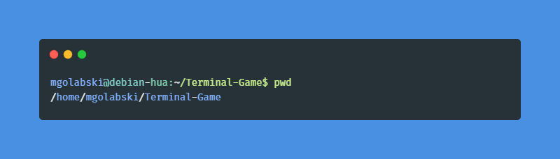
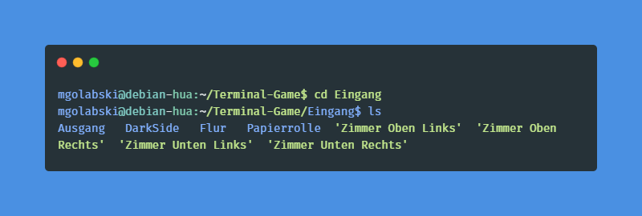
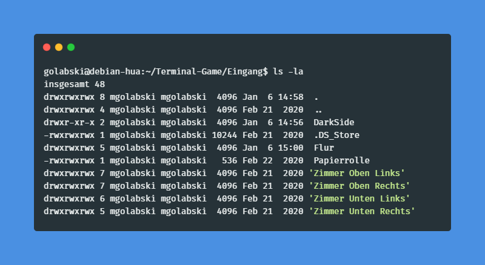
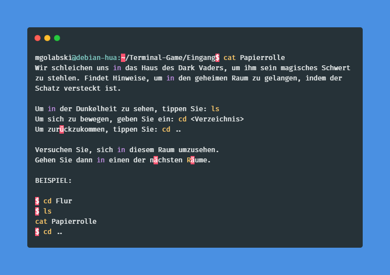
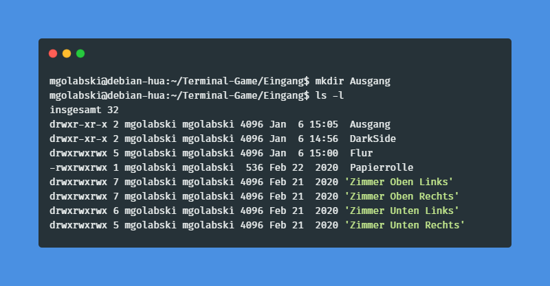
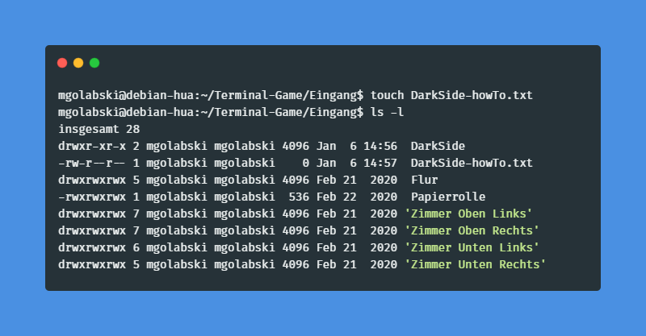
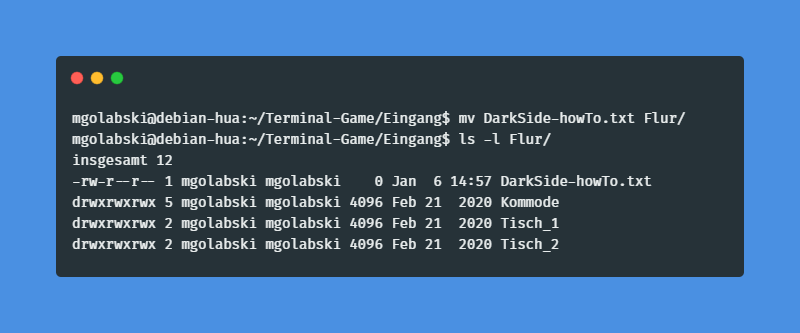
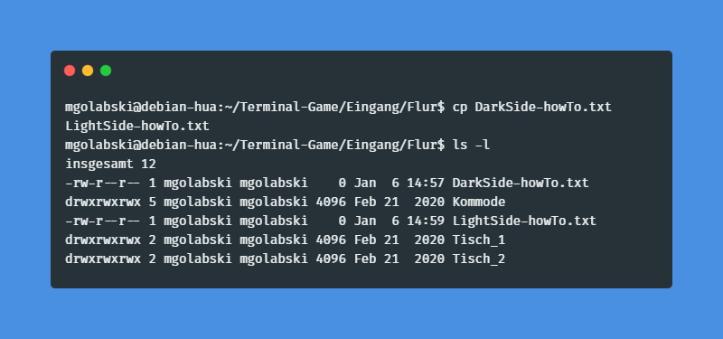
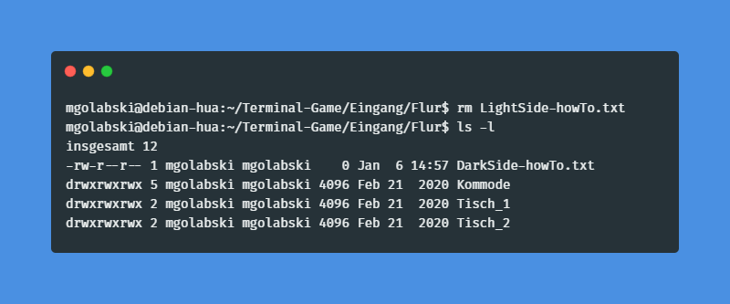

Terminal
In Linux-Betriebssystemen könnt ihr sehr viel sehr einfach mit Terminal-Befehlen erledigen. Auch wenn
das auf den ersten Blick sehr „nerdig“ und ungewohnt wirken sollte, irgendwann siegt die
Bequemlichkeit. Hier sind die 15 wichtigsten Linux-Befehle für Einsteiger.
pwd
pwd - print name of current/working directory

cd
cd - Wechselt das Arbeitsverzeichnis.Wechselt in das angegebene Arbeitsverzeichnis. Ohne Angabe eines
Verzeichnisses wird in das in der HOME Variable definierte
Verzeichnis gewechselt.

ls
ls - Verzeichnisinhalte auflisten
-l Langes Listenformat verwenden
-a, --all
Einträge nicht ignorieren, die mit ».« beginnen

cat
cat - Dateien aneinanderhängen und in die Standardausgabe schreiben

mkdir
mkdir - Verzeichnisse erstellen. Mit Leerzeichen dazwischen können
mehrere Verzeichnisse erstellt werden.

touch
touch - Datei erstellen, oderZeitstempel von Dateien ändern

mv
mv - Dateien verschieben oder umbenennen

cp
cp - Dateien und Verzeichnisse kopieren

rm
rm - Dateien oder Verzeichnisse entfernen
